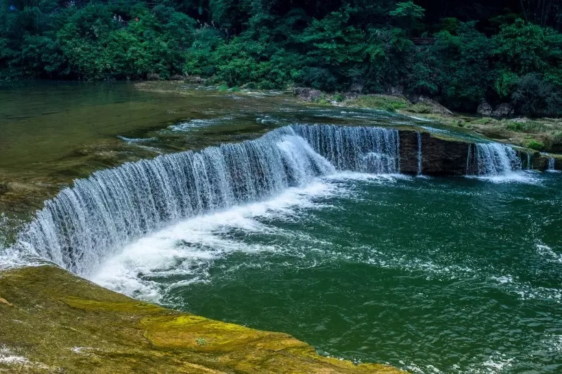
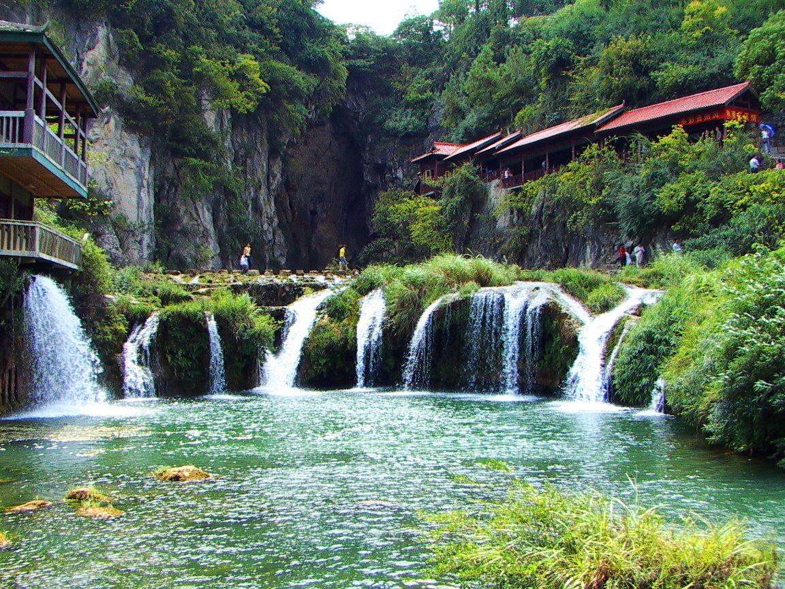

黄果树大瀑布的成因要上溯至2亿多年前的中三叠纪，那时黄果树一带沉积了一套巨厚的碳酸盐岩。黄果树瀑布发育在一套“中三叠世中统关岭二段中厚层夹少量薄层状云灰岩”中，位置在翁寨小背斜东翼。黄果树瀑布形成时期的白水河，是一条发育于距今10万—50万年之间，第四纪中、晚更新世时期由“宽谷期”向“峡谷期”演化中的地上河流，后因“喜马拉雅运动”时期地壳多次间歇抬升，引起河流侵蚀基准面下降，导致河流的侵蚀、溶蚀等下切作用加强，在该处形成“裂点”（河床因地壳抬生、侵蚀基准面下降及构造、岩性等因素的影响而发生较大转折处），这个裂点处的裂隙、溶洞、暗河非常发育。白水河先是形成了一个喀斯特侵蚀裂点型的落水洞型瀑布，后来随着河流侵蚀、溶蚀、侧蚀作用在地壳间歇抬升及晚更新世后期温湿气候中，水动力逐渐加大等因素影响下，落水洞的洞顶逐步坍塌，黄果树大瀑布终于呈现，已经有5万年的历史。
位置很好，离大瀑布景区步行5-10分钟，早上早点进可以避开旅游团，我们是7：30进去的，走到一号观景台一路上都没碰到过游客。从黄果树汽车站过来可以坐景区的班车到大瀑布下，标准间是一张双人床和一张单人床，实际可以住三个人，晚饭也是在饭店餐厅吃的，菜量比较大，点了三个菜两个人都没吃完

金谷瀑布山庄的位置很好，就在大瀑布旁边。整个酒店建的很园林风，所有住起来也有一种别样的感觉。只是远离交通要道，除非自驾车，要不不是很方便。但是却有一种隐居的宁静致远。酒店因为是老酒店了，虽然一直打扫的很干净，但是依然很多设施有些陈旧。酒店收拾的很干净，住起来也有家的感觉，只是服务员有点儿少，所以感觉服务上一般般，马马虎虎，过得去。餐饮方面，因为没在酒店吃东西，所以就不妄言咯。